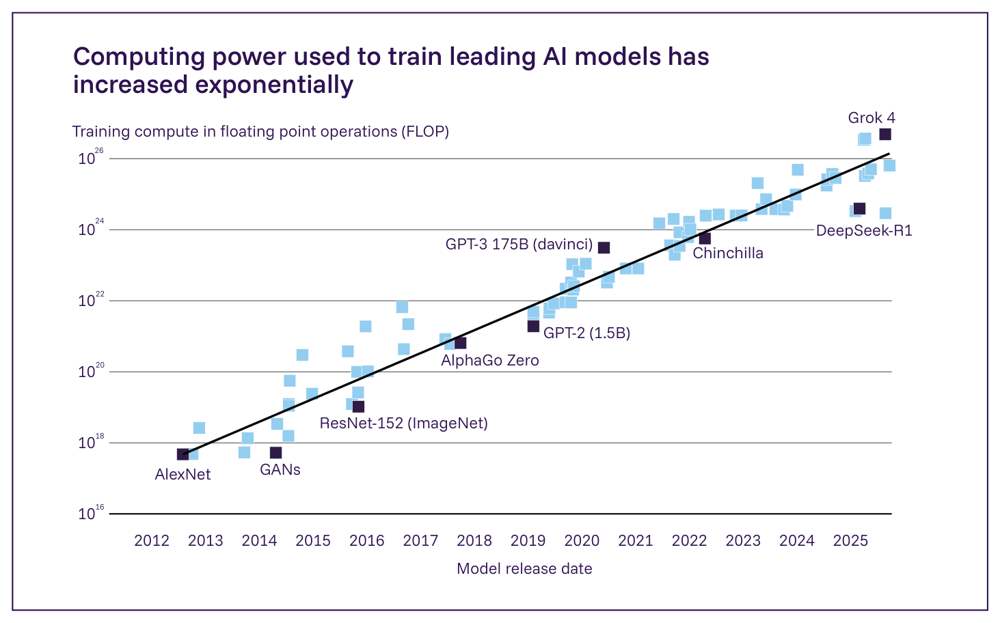
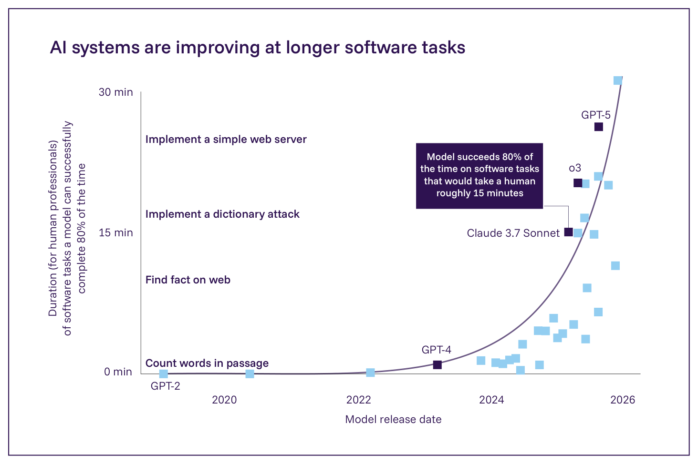
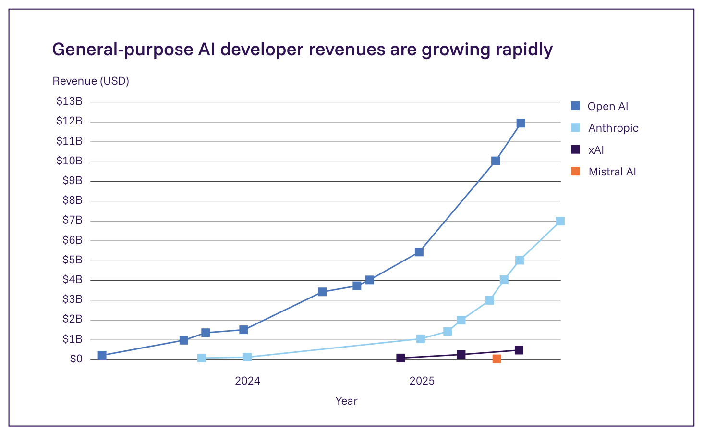

1.3. 2030年までの能力
主要情報
AI開発への投資は、今後数年間で著しく成長すると予想されている。予測によれば、最大のAIモデルを訓練するために使用される計算力は、エネルギー、チップ、またはデータにおける確固たる限界に達することなく、2030年までに125倍に成長しうる。訓練方法もまた、その計算力を毎年2～6倍効率的に使用すると予測されている。 能力向上のもっともらしい軌道は、漸進的な、あるいは頭打ちにすらなる進歩から、急速な加速までの幅がある。技術的な限界やエネルギーのボトルネックといった不確実な要因は、大規模な投資にもかかわらず能力の向上を制約する可能性がある一方、AIシステムがAI研究に貢献するといった正のフィードバックループは、進歩を加速させる可能性がある。どの軌道が最も可能性が高いかについて、専門家の間にほとんど合意はない。 現在の速度で能力が向上し続けるならば、2030年までにAIシステムは、人間のエンジニアが完了するのに複数日を要する、明確に範囲を定められたソフトウェアエンジニアリングタスクを完了できるようになるだろう。他の領域における将来の性能の予測はまれであり、訓練データがより限られており性能の評価が難しい領域に、能力の向上がどの程度まで一般化するかは不明確である。 前回の報告書の公表（2025年1月）以降、主要な傾向は、能力が向上し続けることを示唆している。将来の成果を見込んで、AI企業は、より大規模な訓練実行とより広範な展開を支援するため、データセンター開発に1,000億米ドルを超える前例のない投資を発表した。 2030年を超えると、AI能力の軌道はさらに予測が困難になる。時間の経過とともに、一部の専門家は、より大規模な訓練実行に必要な規模でデータ、チップ、資本、エネルギーを獲得することがより困難になると予想している。しかし、研究者はこれらの資源をより効率的に使用する方法を見出すか、あるいは現在のボトルネックを回避する新しいアプローチを発見するかもしれない。どの考慮事項が最も重要であることが判明するかは、非常に不確実である。 進歩の推進力：コンピュート、アルゴリズム、データ
フロンティアAIの進歩は、コンピュート、アルゴリズムの進歩、データという3つの投入要素によって推進される。
コンピュートとは、AIの開発と展開に使用される、ハードウェア、ソフトウェア、インフラストラクチャを含む計算資源を指す。より多くのコンピュートは、より大規模なデータセットでより大規模なモデルを訓練することを可能にし（Figure 1.6）、様々なタスクにわたる性能の向上をもたらす（195*, 196*）。コンピュートはまた、AIシステムの出力の質を改善するために展開中に使用されることもある（197*, 198）。
アルゴリズムの進歩は、計算資源がどれほど効率的にモデルの性能に変換されるかを改善し、質的に新しい能力を可能にすることもできる。あるモデルが、同じ性能に到達するためにより少ない訓練または推論のコンピュートを使用する場合、そのモデルは別のモデルよりも効率的である（199）。例えば、GPT-5はおそらくより少ないコンピュートで訓練されたため（200）、GPT-4.5よりも効率的であるが、博士レベルの科学問題を特色とするGPQA Diamondなど、様々なベンチマークにおいて4.5を上回る性能を示す（201）。
データとは、インターネットからのテキスト、画像、そして人工的に生成された合成データを含む、モデルを訓練するために使用される情報を指す（202）。データの量と質の両方が進歩に関連している。
近年、これら3つの推進力はすべて劇的に成長している。最も計算集約的なモデルについては、訓練コンピュートは年間約5倍のペースで成長している。この傾向が2030年まで続くならば、これらのモデルは現在よりもおよそ3,000倍多いコンピュートで訓練されうる（204, 205）。2024年の研究によれば、アルゴリズムの効率性は年間おおよそ2～6倍改善しており、同等の性能に必要なコンピュートを削減している（199）。訓練データセットは、数十億から数兆のデータポイントへと拡大しており、平均年間2.5倍の増加を示している（206）。新しい推論時スケーリング手法は、より多くの訓練コンピュートとより大規模なデータセットに主に依存する従来のアプローチとは異なり、モデルが一旦訓練された後もその能力をさらに改善する（173, 207*）。ある研究は、AIシステムが人間の専門家が30分を要する適切に規定されたソフトウェアエンジニアリングタスクを約80%の確率で完了できることを見出しており、これらのタスクの長さは約7ヶ月ごとに倍増している（Figure 1.7）。この傾向が続けば、AIシステムは2027年までに数時間続くタスクを、2030年までに数日続くタスクを完了できるようになる可能性がある（98）。

最先端AIモデルの訓練に使用される計算力は指数関数的に増大してきた Figure 1.6: 2012年から2025年の間に最先端のAIモデルを訓練するために使用された、浮動小数点演算数（FLOP）で測定されたコンピュートの量。最大の訓練実行は現在、おそらく10の26乗FLOPを超えている。出典: Epoch AI, 2025 (203)。
AIの能力は今後数年間でどのように変化するか
2030年までの主要な投入要素の指数関数的成長は技術的に実現可能である
フロンティアAIへの主要な投入要素、すなわちコンピュート、アルゴリズム技術、データにおける指数関数的成長は、2030年頃まで技術的に実現可能である。生産能力、投資、技術的進歩といった制約の分析は、フロンティアモデル当たりのコンピュートが、チップ製造やエネルギー生産における根本的なボトルネックに達することなく、現在の速度で成長し続けうることを示唆している（204, 208）。このスケーリングを支えるため、企業はコンピュートインフラストラクチャに大規模な投資を行っている。例えば、MetaとOpenAIは、それぞれ650億米ドルと5,000億米ドルを費やす計画を発表している（209, 210）。重要なことに、これらの投資はまた、推論コンピュートと、研究開発（R&D）のための計算資源の増加も支えており、後者はAI企業のコンピュート支出の大部分を構成する（211）。

AIシステムはより長いソフトウェアタスクにおいて改善している Figure 1.7: AIエージェントが80%の成功率で完了できる、ソフトウェアエンジニアリングタスクの長さ（人間の専門家が完了するのにかかる時間で測定）の時間経過。近年、このタスクの長さは約7ヶ月ごとに倍増している。出典: Kwa et al., 2025 (98)。
アルゴリズムの効率性の改善は、歴史的に年間追加で2～6倍の性能向上をもたらしてきた（199）。しかし、専門家は、特に2030年以降、この成長がどれほど持続可能であるかについて意見が一致していない。意見の相違は、エネルギー制約と高品質データの希少性が、現在の開発アプローチへの根本的な変化を強いるかどうかを中心としている（206）。
専門家は問題解決における進歩が続くと予想している
§1.2. 現在の能力 で議論されているように、AIモデルは数学的推論において急速な進歩を遂げている。これらの進歩を基盤として、専門家は、2027～2028年までに推論に基づく問題解決において大きな進歩を予測している。Forecasting Research Instituteによる研究では、専門家は、AIモデルが学部レベルのFrontierMath問題において2027年までに55%の精度を、2030年までに75%の精度を達成する確率を50%と予測した（212）。しかし、専門家は、これらの能力が数学とプログラミングを超えて一般化するかどうかについて意見が一致していない。推論技術の影響に関するほとんどの証拠は、これらの領域に限定されたままである（197*, 213*, 214*）。推論技術がどこまで一般化するかを判断するには、法律的・科学的推論のような新規の領域にAIシステムの推論スキルを適用するより広範な評価と試みが必要となるだろう。
AIシステムはまた、自律的なソフトウェア実行においても急速な進歩を遂げている。2019年には人間の専門家が数秒を要するタスクしか完了できなかったAIシステムは、現在では80%の成功率で、人間の専門家が30分を要するソフトウェアエンジニアリングタスクを完了できる（98, 215*）。この指標、すなわちAIシステムが80%の成功率で完了できる最大タスク長は、過去6年間、約7ヶ月ごとに倍増している。これが続けば、AIシステムは2027～2028年までに数時間にわたるソフトウェアプロジェクトを、そして10年の終わりまでに数日にわたるプロジェクトを自律的に完了できるようになる可能性がある。しかし、これらの予測は80%の成功率を前提としており、これはおそらく、多くの専門的な環境における自律的な展開に必要な水準を下回っている。現在の証拠は、タスクが長くなるにつれて性能が低下することを示しており、実用化に対応した成功率を達成するには新しい技術革新が必要になる可能性を示唆している（98）。加えて、ベンチマークタスクは、進歩を過大に示す可能性がある方法で、実世界のソフトウェア作業と体系的に異なる。例えば、それらは、資源の制約、不完全な情報、マルチエージェントの調整といった「雑然とした」実世界の特徴を特色としていない（98）。
専門家は専門領域における進歩の規模と時期について意見が一致していない
汎用AIの能力は、専門家がこれらの進歩の程度と時期について意見が一致していないものの、2028～2030年までに多くの専門領域にわたって向上すると予想されている。AIシステムは既に、博士レベルの専門家を最先端のモデルが上回るGPQA Diamondのような一部の科学ベンチマークで、大学院レベルの性能を上回っている（216）。傾向の外挿は、予測は不確実なままであるものの、モデルが今後数年以内に専門的な科学領域全体で研究レベルの性能に到達しうることを示唆している。
全体的な性能が着実に向上している中でも、特定の能力は予測不可能な形で出現しうる。例えば、汎用AIモデルは、モデルが大規模化するにつれて徐々にこの能力が向上するのではなく、段階的に作業するようプロンプトされた際に、大きな数を足すことにおいて急激な性能の飛躍を示した（217, 218, 219*, 220, 221）。研究者は、このような突然の飛躍を「創発的能力」と呼んでいる。これらは、AIシステムがいつ突然、戦略的に関連する認知能力を獲得するかを予期することが難しいため、計画上の課題を生み出す。重要なことに、研究者は、新しい予測手法が能力の創発をより予測可能にするかどうかをまだ判断できておらず、これらの能力の飛躍が実際にどれほど予測不可能であるかについて意見が一致していない（222, 223, 224, 225*）。
どのようなボトルネックが進歩を減速させる可能性があるか
追加のコンピュートからの経済的収益は逓減しうる
資源のスケーリングだけでは、収穫逓減をもたらし、進歩を減速させる恐れがある。なぜなら、同じ速度の能力向上を維持するには、ますます大規模な投資が必要になるからである。現在のフロンティアAIの訓練実行は、既に計算資源だけでおよそ5億米ドルの費用がかかっており、次世代のモデルは10億～100億米ドルを必要とすると予測されている（204, 226）。一方、AIシステムに対する消費者の信頼は平均して依然として低く、多くの企業がAIシステムの導入に成功することに苦労しており、数千億米ドルの大規模投資を不確実な収益への賭けにしている（93*, 209, 227）。そのような投資が収益を生み出すことに失敗した場合（Figure 1.8）、企業はスケーリングへの投資を大幅に削減する可能性がある。これは、能力の進歩に潜在的な天井を作り出すだろう。なぜなら、継続的な投資がなければ、最近の進歩の推進力となってきた訓練コンピュートの年間5倍の増加は著しく減速するからである。その場合、能力の向上は、物理的なスケーリングだけよりも、アルゴリズムの進歩により大きく依存することになるだろう。
AI支援研究の自動化がAI R&Dをどれほど加速させるかは不明確である
専門家は、AI支援研究の自動化が今後10年間でAIの進歩を劇的に加速させうるかどうかについて意見が一致していない。パイロット研究において、予測の専門家は、今後数年間の進歩が2018年から2024年の6年間の進歩をわずか2年間に圧縮する確率について尋ねられた（229）。AI予測の専門家は中央値で20%の確率を示したのに対し、スーパーフォーキャスター（熟練した総合的予測者）はわずか8%と推定した。しかし、AIシステムが数ヶ月にわたる研究プロジェクトにおいて人間の研究者よりも優れた性能を示すシナリオでは、予測者の推定値は18%に増加した（229）。そのようなシナリオでは、AI研究ははるかに早く完全に自動化される可能性があり、これがAIの進歩を大幅に加速させる可能性があると仮説を立てる者もいる。
AI支援研究の自動化に関する現在の実証的証拠は入り混じっている。AI研究エンジニアリング能力を測定するベンチマークにおいて、AIエージェントは2時間のタスクでは人間よりも優れた性能を示すが、8時間のタスクではより低い成功率を示す（230）。示唆的ではあるものの、この証拠は、研究者が曖昧な目標を管理しなければならないこと、そしてアルゴリズムの改善が実際にモデルの性能を改善したかどうかを知るには長い時間がかかることなど、AI R&Dにおける実世界のボトルネックを考慮していない。この不確実性は、政策立案者と機関にとって極端な計画上の課題を生み出す。AI R&Dのペースを加速させるAIの各進歩が次の進歩を促進する場合、数十年分の進歩が数年で起こりうる。

主要AI企業の推定年換算収益 Figure 1.8: 2023年以降の主要AI企業の推定年換算収益。出典: Epoch AI, 2025 (228)。
商業展開はしばしば能力の向上に遅れる
現在のAIシステムは統制された環境において高度な能力を実証しているが、その採用は分野によって異なる速度で進んでいる。AIコーディングアシスタントは、リリースから1～4年以内にソフトウェア開発者の間で広く採用された（231）。対照的に、多くの分野はAIシステムを展開する上で著しい障害に直面している（232, 233）。研究環境において人間レベルの診断精度を達成する医療AIシステムは、広範な展開の前に、規制当局の承認、臨床への統合、医師の訓練のために、しばしば追加で3～5年を必要とする（234）。専門家は、文化的抵抗、インフラの要件、規制上の反発を含む障壁を挙げ、自動運転車技術の展開は2030年においてもなお限定的であると予測している（212）。世界の労働者の60%を雇用する中小企業は、限られた技術的専門知識、不十分な計算インフラストラクチャ、法外な統合コストといった、AIの採用を遅らせる可能性のある特有の展開上の課題に直面している（235, 236）。先進的な半導体に対する輸出規制や、法域間で異なる規制枠組みを含む地政学的要因は、AI能力の開発と展開の両方に影響を与える追加の障壁を生み出す可能性がある（237, 238）。
とはいえ、専門家は、展開のギャップが急速に狭まるか、それとも長期的な制約として持続するかについて意見が一致していない。一方では、特定の分野におけるAIツールの急速な普及は、組織が具体的な生産性の向上と競争上の優位性を観察すれば、展開が加速することを示唆している（239）。他の研究者は、技術的な進歩とは関係なく、組織的・規制的な適応には本質的に何年もかかると主張している（240）。この意見の相違は、政策のタイミングに影響を及ぼす。急速に展開されるAI能力向けに設計された政策は時期尚早である可能性があり、一方、緩慢な採用を前提とする政策は、リスクを適切に管理するには不十分である可能性がある。
2030年までの進歩はどのようなものになりうるか：OECDの進歩シナリオ
上記で詳述したものを含む現在の傾向と不確実性を考慮し、OECDは、2030年までにAIがどのように進歩するか、あるいは減速するかについて、専門家と証拠に基づくシナリオを作成した（241）。OECDは、これらのシナリオを本報告書に統合するために International AI Safety Report と協力した。分析は、2030年までに4つの広範なシナリオの類型がすべてもっともらしいことを示唆している。
シナリオ1：進歩が停滞する
AIの能力がほぼ変化しないままであるシナリオ。近年観察された急速な向上は止まり、進歩は頭打ちになる。
シナリオ：2030年、AIシステムは人間が完了するのに数時間かかる様々なタスクを迅速に引き受けることができるが、頑健性とハルシネーションの問題が信頼性に影響を与える（98, 242）。AIシステムは典型的に、詳細なプロンプト、レビュー、文脈の提供といった、人間からの相当な支援に依存している。それらは、新しいスキルを学習したり記憶を形成したりする頑健な能力を欠いており、より長く複雑なタスクにわたって一貫性を維持したり、動的な物理的・社会的環境と関わったりすることができない（243）。 経路：2025年以降、フロンティアAIモデルを開発するための既存のアプローチの中での成果は、根本的な限界に達する。これは、より大規模な訓練実行とより強力な推論システムからの収穫逓減、計算資源やその他の重要な投入要素へのアクセスにおける制限、AI投資の著しい減少、あるいは主要なアルゴリズムの飛躍的進歩の欠如により、AIの進歩が減速する場合に起こりうる（244, 245*）。 歴史的類推：1930年から1960年にかけて急速に上昇した後、実用上の制約により時速500ノットで頭打ちになった旅客機の速度（246）。 シナリオ2：進歩が減速する
AIシステムを訓練するための既存のアプローチの中での漸進的な成果が、継続的だがより緩やかな進歩をもたらすシナリオ。
シナリオ：2030年、AIシステムは有用なアシスタントに匹敵する。それらは深い知識基盤を持ち、標準的な形態の構造化された推論に優れ、コンピューターの使用、ウェブの閲覧、あるいはユーザーに代わって人や サービスとの限定的な相互作用を行うことを必要とするタスクを有用に遂行できる。それらは関連する記憶を保持し、一貫した思考を維持し、より長くより複雑なタスクを遂行するために誤り訂正を行うことができる。それらは新しいスキルを学習する頑健な能力を欠いており、物理的または身体を伴う社会的タスクは、（工場や実験室のような）限定的で統制された環境でのみ扱うことができる。 経路：2025年以降、フロンティアモデル開発者のアプローチは、継続的学習、メタ認知と主体性、問題解決、創造性、物理的タスク、社会的相互作用における限界を克服することに苦労しており、既存の訓練パラダイムは不完全な解決策しか提供しない（243）。事前学習、推論、事後学習のスケーリングは、いくつかのアルゴリズムの革新と組み合わさって進歩をもたらし続けるが、それは近年よりも緩やかであり、推論システムは期待されたほどうまく一般化することに失敗する（247, 248）。投資家が継続的な投資からの収益の低下を見るにつれて、スケーリングを続ける能力は減速する。ハードウェア、インフラストラクチャ、天然資源、データ供給、エネルギーにおけるボトルネックが、コンピュートとデータを急速にスケーリングする能力を制限する（208）。 歴史的類推：1940年代から1960年代にかけて急速な飛躍的進歩の「黄金時代」を見た後、既存の発見手法からの容易な成果が枯渇するにつれて減速した抗生物質の発見（249）。 シナリオ3：進歩が続く
継続的な急速な進歩が起こるシナリオ。
シナリオ：2030年、AIシステムは専門家の協力者に匹敵する。それらは、人間が完了するのに1ヶ月かかるかもしれない多くの専門的タスクを、デジタル環境において成功裏に遂行できる。AIシステムは典型的に、人間が高レベルの指示を提供することに依存するが、しばしば、様々な利害関係者と自律的に相互作用することを含め、与えられた目標に向かって高い自律性で作業できる。それらは記憶を効果的に形成し想起でき、ある程度まで「仕事をしながら学習」できる。それらは、統制された環境を超えて、一部の物理的タスクと身体を伴う社会的タスクを成功裏に扱うことができる。 経路：2025年以降、AIの能力は、より大規模な訓練実行、より強力な推論システム、新しいアルゴリズムの革新を通じて急速に成長し続ける（151）。コンピュートとデータの投入要素は、継続的な成長の可能な範囲についての現在の推定と一致して、拡大を続け、2030年以前に著しい限界に達することはない（203, 208）。既存のアプローチの反復と拡張、あるいは新規のアルゴリズムの革新により、開発者は継続的学習といった分野における現在の限界を克服できる。 歴史的類推：5十年にわたってチップ上の計算力がおよそ2年ごとに倍増したムーアの法則（250）。 シナリオ4：進歩が加速する
劇的な進歩により、AIシステムがほとんど、あるいはすべての能力の次元において人間と同等か、あるいはそれ以上に高性能になるシナリオ。
シナリオ：2030年、AIシステムは人間レベルのリモートワーカーに匹敵する。AIシステムの自律性と認知能力は、認知タスクにおいて人間と同等か、それを上回る。それらは、状況が変化すれば熟考し修正できる広範な戦略的目標に向かって、有能かつ自律的に作業する一方、必要な場合には人間と協働する。AIシステムは、展開中に新しい情報とスキルをシームレスに学習できる。AIによって誘導されるロボットは、多くの産業と職務において、動的な実世界の環境で複雑な物理的または社会的タスクを扱うことができる。物理的タスクをまたいだ一般化における課題のため、特定のタスクのために特別に開発されたシステムでない限り、AIの性能はこれらの物理的で身体を伴うタスクにおいて依然として概ね人間に遅れをとる（251, 252）。 経路：2025年以降、事前学習、事後学習、推論の継続的または加速的なスケーリングを通じて、既存のパラダイムの中でAIの能力の指数関数的な成果が続く。これらは、著しいアルゴリズムの飛躍的進歩と、AIの開発へのAIコーディングアシスタントからのますます著しい貢献によって増幅される（31*, 253*）。 歴史的類推：新しいシーケンシング・パラダイムの開発により、2000年から2020年にかけて超指数関数的な改善を見たDNAシーケンシング（254）。 更新情報
前回の報告書の公表（2025年1月）以降、観察された展開は、その報告書で概説された急速なAI進歩の軌道と概ね一致し続けている。汎用AIシステムは、科学的推論と自律的なタスク実行において特に顕著な進歩を遂げ、著しくより高性能で、手頃な価格になり、広く採用されるようになった。主要なAI企業とクラウドプロバイダーは、合計数千億米ドルに及ぶ前例のないデータセンター投資を発表しており、前回の報告書で予想されたコンピュートのスケーリングの傾向への持続的なコミットメントを示している（255*, 256*, 257*）。AI開発者は、コンピューター利用とツール利用における進歩を含め、より長い複数ステップのタスクをより確実に、人間の監督を減らして実行できるエージェントの開発において著しい進歩を遂げている。推論時コンピュートスケーリングの採用は、複数の開発者にわたって広く普及している（167*, 258*, 259*, 260*）。AIツールは現在、訓練コードの記述、ハードウェアアーキテクチャの設計、合成訓練データの生成のために、AI開発ワークフローに日常的に統合されている。
証拠のギャップ
将来のAIの能力をめぐる主要な証拠のギャップには、予測に関連する科学的証拠の限界、AIの進歩に対する実世界の制約についての不十分なデータ、自動化がAIの開発をどの程度加速させうるかについての理解の限界が含まれる。第一に、研究者は、AIシステムがいつ特定の能力を持つようになるか、あるいは主要な投入要素のスケーリングに対する収穫逓減がどこで進歩を制約するかを確実に予測できない。ベンチマーク性能と実世界での性能との関係もまた十分に理解されていない。したがって、たとえベンチマーク性能が容易に予測可能であったとしても、関連する実世界への影響は非常に不確実であろう。
第二に、AIの進歩を制限しうる実世界の制約をめぐる証拠は限られている。これらの制約には、2030年以降の訓練データの入手可能性の不明確さや、エネルギー生産、チップ製造、資本支出がAI開発の需要に追いつけるかどうかが含まれる。
第三に、AIが自らの研究開発を自動化することからのフィードバックループについての実証的理解は最小限である（194）。特に、このプロセスにおいてどれほどの人間の監督が必要になるか、そして大規模な実験における遅いフィードバックループが加速を制約しうるかどうかについて、大きな不確実性がある（261, 262）。
これらの証拠のギャップは、政策立案者に二つの落とし穴の間を進むことを強いる。一方では急速に出現する能力を過小評価すること、他方では実用的な応用に結びつかないかもしれない技術的進歩に過剰反応することである。これは、複数のシナリオにわたる不測事態計画を不可欠にする。
政策立案者にとっての課題
AIの能力予測に取り組む政策立案者にとって、主要な課題には、信頼性の低い測定ツールと、特定の能力がいつ開発されるかについての不確実性が含まれる。現在のベンチマークはしばしば実世界の能力を正確に表すことに失敗しており、より困難で現実的な評価を開発するための取り組みの増加を促している（263*, 264, 265, 266）。例えば、あるモデルがプログラミングベンチマークで90%の精度を達成したとしても、これは機能するソフトウェアアプリケーションを構築できることを意味しない。アルゴリズムの効率性の進歩の推定は、訓練効率の改善、推論時最適化、アーキテクチャの革新といった主要な指標についてのデータが限られているため、非常に不確実である。例えば、言語モデルにおけるアルゴリズム効率性の研究は、過去のデータポイントに基づき年間3倍の効率性の改善を示唆しているが、年間2～6倍の範囲の速度を排除することはできない（199）。
この予測の問題は、はるかに異なる政策上の含意を持つ能力の軌道についての不確実性を複合化させる。アルゴリズムの進歩が現在の推定の上限で続くならば、モデルは2030年までに10～100倍少ないコンピュートで同等の能力を達成しうる。したがって、規制当局は、AIの進歩の速度とAI開発がどのようなものであるかにおける急速な変化、特に必要とされる資源の観点からの変化に適応できる、あるいはそれに対して頑健であり続けられる枠組みを検討する必要があるだろう。不確実性を低減するためには、実世界のタスク評価、アルゴリズムの革新の速度、質的に新しい能力の出現を含む具体的な指標をモニタリングすることが重要になるだろう。
技術補遺
スケーリング則はしばしば経験的指針として用いられる
「スケーリング則（scaling laws）」は、モデルのサイズ、計算資源、性能の間の予測可能な関係を記述する。モデル開発者が訓練コンピュートを10倍に増やすと、モデルの性能は、言語理解、画像認識、コード生成といった多様なタスクにわたって、予測可能な量だけ改善する傾向がある（195*, 196*）。この予測可能な関係は、小規模な研究用モデルから、訓練に数億米ドルを要する今日の最先端AIシステムに至るまで、モデルサイズの6桁にわたって成り立っており、これらのパターンがニューラルネットワークの学習の仕方の根本的な性質を反映していることを示唆している。この一貫性により、多くの開発者と投資家は、スケーリング則を有用な経験的指針として扱い、主要な投資決定に役立てている。しかし、スケーリング則は経験的な規則性であり、数学的な保証ではない。それらは観察された挙動から推論されており、現在の経験を超えたコンピュートまたはデータの水準では破綻する可能性がある。そして、それらはエンドユーザーの価値ではなく技術的な指標を予測するため、実世界の性能または経済的な収益は、訓練コンピュートとともに滑らかに増加しない可能性がある。例えば、OpenAIは、GPT-4.5がスケーリング則と一致する技術的改善を達成したにもかかわらず、それを中止しており、追加のスケーリングが必ずしも比例した経済的価値に変換されるとは限らないことを示唆している（200）。
データの入手可能性は、マルチモーダルデータと合成データの利用によって改善されうる
AIの進歩の多くは、典型的にインターネットから取得されたテキストデータである、ますます大規模なデータのコーパスでモデルを訓練することによって推進されてきた。しかし、高品質な言語データは有限であり、将来の進歩が限られたデータの入手可能性によってボトルネック化される可能性を提起している。
それでもなお、公開インターネットのテキストデータが希少になった場合に、より多くのデータを取得するための様々な技術がある。例えば、テキストデータが希少になった場合、AI開発者は代わりに他の種類のデータ（「マルチモーダルデータ」）を使用できるかもしれない。現在の推定によれば、公開インターネット上には約10の13乗トークンの高品質なテキストが存在し、モデルは既にこの限界に近づくデータセットで訓練されている（267）。しかし、画像データは10の14乗～10の15乗トークンの追加の訓練シグナルを提供し、動画データは10の15乗～10の16乗トークンを追加し、「モノのインターネット」デバイスからのセンサーデータは年間10の17乗トークンを貢献しうる（268）。課題はデータの量ではなく、質と関連性にある。すなわち、単一の動画フレームは、テキストの一段落よりも意味的な情報が少ないため、動画から意味のある訓練シグナルを抽出するには新しい技術が必要とされる。
研究者はまた、モデルのための訓練データを生成するためにAIモデルを使用すること（「合成データ」）も調査している。数学、プログラミング、形式的推論といった、出力が検証可能な領域では、モデルは解決策を提案し正しさを確認することによって訓練データを生成できる（269*）。最近の推論時スケーリング技術の波はこのアプローチを実証している。すなわち、モデルは、各ステップを検証できる、数百万の自己生成された推論の連鎖で訓練された（112*, 270）。しかし、創造的な文章作成、戦略的計画、科学的仮説生成といった、答えの検証がより困難または不可能な領域では、合成データは「モデル崩壊（model collapse）」を引き起こすリスクがある。これは、誤りが連続する世代の訓練を通じて複合的に蓄積する現象である（271）。研究者は、別個の検証者モデルを訓練することが、合成データのアプローチをより検証が困難な領域に拡張できるかどうかを探求している。特定のタスクについて検証が生成よりも容易になれば、モデルは明示的な正解データなしで新しいデータで訓練される可能性があるが、このアプローチは依然として大部分が理論的なものにとどまっている（272）。
物理的インフラストラクチャは計算資源のスケーリングを制約しうる
AIの計算には膨大なエネルギー需要があり、AIの電力消費における現在の成長率は数年間持続する可能性がある。世界のAI計算は、2026年までにオーストリアまたはフィンランドと同程度の電力消費を必要とすると予測されている（273）。AI訓練のための電力消費における現在の成長率に基づくと、2030年の最大のAI訓練実行は、数百万の米国の家庭に電力を供給するのに十分な、4～16ギガワット（GW）の電力を必要とするだろう（60, 274）。今日でさえ、OpenAIが計画しているStargateデータセンターは1.2GWの規模に達しており、Metaが計画しているルイジアナのデータセンターは2GWを超えると予測されている（210, 274）。Forecasting Research Instituteによる予測調査の専門家は、2030年末までに、中央値のシナリオでは米国の電力消費の7.4%がAIシステムの訓練または展開に充てられると予測している（212）。これらのエネルギー需要は大きいものの、（ほとんどのフロンティアAIモデルが開発されている）米国は、それらを満たし、異なる地域にわたってデータセンターを接続するために電力インフラストラクチャを構築している。これらの取り組みは、10GW規模の訓練実行を支えるにはおそらく十分であり、したがって、少なくとも10年の終わりまでは、エネルギーのボトルネックがコンピュートのスケーリングを妨げる可能性は低い（275）。
AIチップの生産と改善への課題は存在するが、おそらく克服可能である。コンピューターチップの製造工場を建設するには、典型的には3～5年かかり（276*, 277）、サプライチェーンの不足が時に重要なチップコンポーネントの生産を遅らせる（278, 279, 280）。しかし、主要なAI企業は、AIチップの在庫の大きな割合を確保することにより、近い将来にコンピュートの成長を持続させることができる。例えば、ある研究は、ある時点で単一のAI企業が所有する世界のデータセンターAIチップの割合は、10%から40%の間であると推定している（208）。さらに、チップ生産における既存の傾向と技術的可能性は、2030年までに、（2023年の最先端の言語モデルである）GPT-4よりも10万倍多い訓練コンピュートでAIシステムを訓練することが可能であることを示唆している。これは、同期間に合計1万倍の増加を意味する訓練コンピュートの既存の成長率を支えるのに十分である（208）。したがって、チップ生産の制約は著しいものの、投資が持続すれば、2030年までの現在の速度での最大のモデルのさらなるスケーリングを妨げる可能性は低い。しかし、同様の水準の投資が続くかどうかは不明であり、これは今後数年間のAIの能力が不確実である主要な理由の一つである。
現在の困難なベンチマークを理解する
上記で議論したように、AIの進歩の有益な指標は、モデルが完了できるタスクの長さである。ソフトウェアエンジニアリングにおいては、この長さは約7ヶ月ごとに倍増する。この傾向を研究するため、研究者は、数分で終わる迅速なバグ修正から、数日を要する機能実装まで、研究またはソフトウェアエンジニアリングに関連する170のタスクを作成した（98）。モデルは、人間の作業を反映する制約の中で問題を解決しなければならない。結果は一貫した指数関数的パターンを示している。例えば、50%の成功率では、解決可能な最大タスクの長さは2019年の数秒から2025年の2.5時間に成長したのに対し、80%の成功率では、タスクの長さははるかに短く、現在は約20～30分である。これらの限界を超えると、成功率は急激に低下する。2.5時間で50%の成功率を維持するモデルは、4時間では25%を下回る。この評価はまた、能力の非対称性を浮き彫りにしている。すなわち、モデルはコード生成と構文変換に優れているが、人間のソフトウェア開発者がより自然に扱う、アーキテクチャ上の決定とファイルをまたいだリファクタリングにおいては依然として低い性能を示す。
FrontierMathは、AIシステムに挑戦するために特に第一線の数学者によって作成された問題を通じて、AIの数学的推論の限界をテストする、もう一つの困難なベンチマークである。このベンチマークには、深い概念的理解、創造的な証明戦略、数論、実解析、代数幾何学といった複数の数学領域からの技術を組み合わせる能力を必要とする、原著の研究レベルの数学問題が含まれる（281）。これらの問題は未発表であり、モデルがテストされる前にそれらを見ることを防ぐために60人以上の数学者によって検証されている。問題は3つの主要な階層に分かれている。約25%は国際数学オリンピックのレベルであり、約50%は大学院レベルの知識を必要とし、最も困難な約25%は、トップの数学者にとってさえ解くのに数時間、あるいは数日を要する研究レベルの問いである。このベンチマークが2024年にリリースされたとき、最先端のAIシステムは全体で2%未満の得点しか取れなかった。しかし、最近のモデルは有望性を示している。Epoch AIの評価によれば、OpenAIのGPT-5は約25%に到達し、新しいo4-miniは約20%を達成し、最も困難な階層でも一部能力を示しており、基準水準からの急速な進歩を示している。重要なことに、これらの成功したモデルは新しい推論スケーリング技術を使用していた（281）。